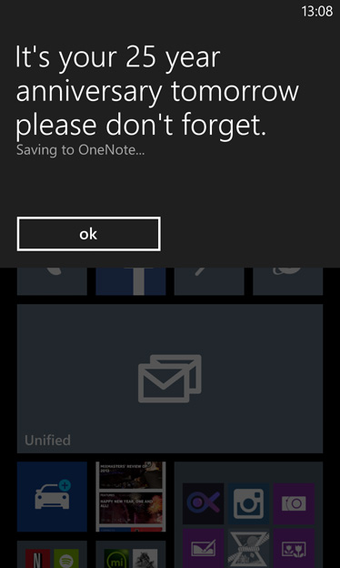

1. Translate text using the camera
Not only is your Lumia’s camera a powerful photographic weapon, it can also be used in other ways, such as translating text into 39 languages. Press the Search (magnifying glass) button and then click the eye icon. Point your Lumia at your subject and click ‘scan text’. If you’re capturing in your native tongue, you’ll be presented with a list of languages to translate to. If you scan text in another language, it will automatically translate to your native tongue. Neat, huh? Results aren’t 100% accurate, but it will always give you a good idea of what’s being said. Handy for restaurant menus. And helping your kids with their homework…
2. Type quicker with shortcuts
This tip is unlikely to free up hours of your time, but it will make your keyboard finger-pecking faster while composing an email, SMS, OneNote entry or suchlike. Rather than pressing the numeric or punctuation buttons to enter their respective modes, then choosing your desired digit or mark, then tapping the button you first pressed to get you back into the standard keyboard, just press and hold the numeric/punctuation button and slide your finger over to the number or mark you want to use. Release your finger and the keyboard will snap back into default keyboard mode. Ninja skill unlocked.
3. Identify music, magically.
Simple to do, yet hugely powerful, this neat feature will tell you the name of the artist and track currently playing in your environment. Just click the Search button, then the music note icon, and point your Lumia at the tune. Unless you’re listening to an obscure trip-funk record that sold seven copies to a clowder of cats in 1989, you’ll be presented with the artist, the track and a link to buy the music from the Windows Phone Store. Great for finding out music from TV/radio adverts and public spaces.
4. Customise your web browser address bar
Getting to your favourite websites quickly is essential on any device, let alone a smartphone. So try this nifty trick to create a shortcut button right from the Internet Explorer web browser bar. Go to Settings > Applications > Internet Explorer and select ‘favourites’ from the ‘Use address bar button for’ drop-down list. You can also choose ‘tabs’, which will bring up the tab view of your saved sites, or keep it as the default stop/refresh button.
5. Respond to a phone call with an SMS
Just about to close that business deal? Kids pouring spaghetti hoops into the DVD player? Having your ear bent by great-auntie Jean? There are many occasions in life when taking a mobile phone call just isn’t convenient. So use a built-in feature to send your caller a text message rather than picking up. Just ‘slide up’ on any call that comes hit and press the ‘text reply’ button. Then choose a default message or create your own. To edit your responses, got to Settings > Applications > Phone and click the ‘edit replies’ button to create up to four bespoke answers.
6. Magnify your screen
If, like many of us, your birthday signifies not only another year of wiseness, but an increase in eye-squinting when reading, you might want to check out the Ease of Use settings on your Lumia. Go to Settings > System > Ease of Access and choose to; activate high contrast for better clarity, increase text size (in a number of areas) and/or turn on the Screen magnifier, which means you can double-tap to zoom into and pan around things.
7. Activate voice commands
This couldn’t be easier. Just press and hold the Windows button to initiate the feature, press the speak button and then bark at your Lumia. There are a number of voice commands to perform specific tasks (you can find a selection of them here), but once mastered you’ll find it useful as well as pretty cool. You can also use the voice-command feature to dictate an email. Just tap the Speak (the microphone icon) button when in the body copy area of a message and babble away.
8. Automatically backup your Lumia photos with SkyDrive
With the amount of snaps we take with our phones, knowing that they’re in a safe place is essential. Our advice? Use a cloud storage service as backup. For Lumia users, SkyDrive is superb – as soon as you take a shot, it’ll appear in your SkyDrive Pictures folder. Just follow our super guide to a lifetime free of sleepless nights. You’ll get 7GB of free space, with the option of adding more as and when.
https://blogs.windows.com/devices/2014/01/20/14-tips-tricks-secrets-windows-phone-8/